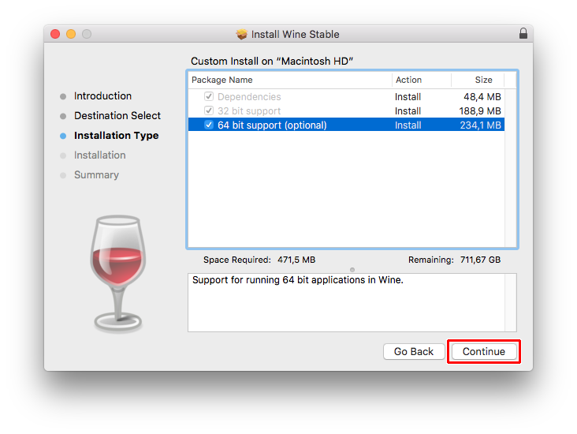

FYC://HTUWAOM
=-=-=-=-=-=-=-=-=-=-=-=-=-=-=-=-=-=-=
Home
Frist thing we need is this pkg file witch is installer (I would recommend Wine Development)
Wine Stable
Wine Development
Wine Staging
In the install make sure 64 Bit Support is on

Now your done